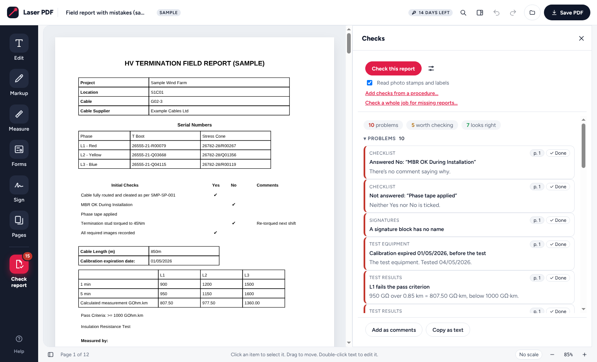

<title>Laser PDF</title>
<meta name="claude:viewport-fit-sides" content="cover">
<meta name="description" content="Laser PDF: a PDF editor for Mac and Windows that checks field and test reports before your client does. Works offline.">
<link rel="preconnect" href="https://fonts.googleapis.com">
<link rel="stylesheet" href="https://fonts.googleapis.com/css2?family=Barlow+Condensed:wght@600;700&family=Figtree:wght@400;500;600;700&family=JetBrains+Mono:wght@500&display=swap">
<style>
/* Layout: a dark "site cabin" hero carrying a live-looking check result, then light working sections in one 1120px column. */
:root {
  --ink: #15151c; --paper: #f6f6f9; --card: #ffffff; --line: #e4e4ec; --mute: #5b5b6b;
  --red: #e11d48; --red-2: #ff4d6d; --soft: #ffe4e9; --amber: #b45309; --amber-soft: #fef3c7; --green: #15803d; --green-soft: #dcfce7;
  --hero: #15151c; --hero-ink: #f4f4f8; --hero-mute: #b9b9c8; --hero-line: rgba(255,255,255,.14); --panel: #ffffff; --panel-ink: #15151c;
  --display: "Barlow Condensed", "Arial Narrow", "Roboto Condensed", sans-serif;
  --body: "Figtree", system-ui, -apple-system, "Segoe UI", sans-serif;
  --mono: "JetBrains Mono", ui-monospace, Menlo, Consolas, monospace;
}
@media (prefers-color-scheme: dark) { :root:not([data-theme="light"]) {
  --ink: #ececf3; --paper: #101016; --card: #191921; --line: #2b2b37; --mute: #a3a3b5; --soft: #3a1420; --amber: #fbbf24; --amber-soft: #3a2a0a; --green: #4ade80; --green-soft: #0f2a18;
  --hero: #0a0a0f; --panel: #1d1d26; --panel-ink: #ececf3; color-scheme: dark } }
:root[data-theme="dark"] {
  --ink: #ececf3; --paper: #101016; --card: #191921; --line: #2b2b37; --mute: #a3a3b5; --soft: #3a1420; --amber: #fbbf24; --amber-soft: #3a2a0a; --green: #4ade80; --green-soft: #0f2a18;
  --hero: #0a0a0f; --panel: #1d1d26; --panel-ink: #ececf3; color-scheme: dark }
* { box-sizing: border-box; }
body { margin: 0; background: var(--paper); color: var(--ink); font: 16px/1.6 var(--body); }
a { color: inherit; }
.wrap { max-width: 1120px; margin: 0 auto; padding-left: max(16px, env(safe-area-inset-left, 0px)); padding-right: max(16px, env(safe-area-inset-right, 0px)); }
h1, h2, h3 { font-family: var(--display); text-transform: uppercase; line-height: 1; letter-spacing: .005em; margin: 0; text-wrap: balance; }
h2 { font-size: clamp(30px, 4.4vw, 44px); }
h3 { font-size: 21px; letter-spacing: .02em; }
p { margin: 0; }
.eyebrow { font: 600 12px/1 var(--body); letter-spacing: .14em; text-transform: uppercase; color: var(--red); }
.btn { display: inline-flex; align-items: center; gap: 8px; border-radius: 999px; padding: 12px 20px; font: 700 15px/1 var(--body); text-decoration: none; border: 1.5px solid transparent; cursor: pointer; }
.btn.primary { background: var(--red); color: #fff; }
.btn.primary:hover { background: #c8103b; }
.btn.ghost { border-color: currentColor; }
.btn:focus-visible, a:focus-visible { outline: 3px solid var(--red-2); outline-offset: 3px; }
.logo { width: 34px; height: 34px; flex: none; }
.logo .lt { fill: #15151c; stroke: #3a3a46; } .logo .lb { stroke: #fff; stroke-width: 2.6; stroke-linecap: round; } .logo .lg { fill: var(--red-2); opacity: .3; } .logo .ld { fill: var(--red-2); }

/* top bar + hero */
.hero { background: radial-gradient(110% 90% at 88% 0%, #4a0f22 0, var(--hero) 58%); color: var(--hero-ink); }
.nav { display: flex; align-items: center; gap: 24px; padding-block: 18px; }
.brand { display: flex; align-items: center; gap: 10px; text-decoration: none; }
.brand b { font: 700 18px/1.1 var(--body); display: block; } .brand small { font-size: 11.5px; color: var(--hero-mute); }
.nav nav { margin-left: auto; display: flex; gap: 22px; font-size: 14.5px; font-weight: 600; flex-wrap: wrap; }
.nav nav a { text-decoration: none; color: var(--hero-mute); } .nav nav a:hover { color: var(--hero-ink); }
.herogrid { display: grid; grid-template-columns: minmax(0, 1.05fr) minmax(0, .95fr); gap: 48px; align-items: center; padding-block: 40px 72px; }
.hero h1 { font-size: clamp(46px, 7.4vw, 88px); }
.hero h1 em { font-style: normal; color: var(--red-2); }
.hero .lead { margin-top: 18px; font-size: 18.5px; color: #e4e4ee; max-width: 33em; }
.hero .ctas { display: flex; gap: 12px; margin-top: 28px; flex-wrap: wrap; }
.hero .ghost { color: var(--hero-ink); }
.facts { display: flex; gap: 8px; margin-top: 26px; flex-wrap: wrap; }
.facts span { border: 1px solid var(--hero-line); border-radius: 999px; padding: 4px 12px; font-size: 13px; color: var(--hero-mute); }

/* the check result panel */
.panel { background: var(--panel); color: var(--panel-ink); border-radius: 18px; box-shadow: 0 30px 80px rgba(0,0,0,.45); overflow: hidden; min-width: 0; }
.ph { display: flex; align-items: center; gap: 10px; padding: 14px 16px; border-bottom: 1px solid var(--line); }
.ph b { font-size: 14.5px; } .ph .file { font: 500 12px/1.2 var(--mono); color: var(--mute); overflow: hidden; text-overflow: ellipsis; white-space: nowrap; min-width: 0; }
.ph .run { margin-left: auto; background: var(--red); color: #fff; border-radius: 999px; padding: 5px 12px; font-size: 12px; font-weight: 700; white-space: nowrap; }
.chips { display: flex; gap: 6px; padding: 12px 16px 4px; flex-wrap: wrap; }
.chip { border-radius: 999px; padding: 3px 10px; font-size: 12px; font-weight: 600; }
.chip.bad { background: var(--soft); color: var(--red); } .chip.warn { background: var(--amber-soft); color: var(--amber); } .chip.ok { background: var(--green-soft); color: var(--green); }
.finds { list-style: none; margin: 0; padding: 8px 16px 16px; display: grid; gap: 8px; }
.finds li { border: 1px solid var(--line); border-left: 3px solid var(--red); border-radius: 10px; padding: 9px 12px; display: grid; gap: 3px; }
.finds li.w { border-left-color: var(--amber); }
.finds i { font-style: normal; display: flex; justify-content: space-between; gap: 8px; font-size: 11px; letter-spacing: .08em; text-transform: uppercase; color: var(--mute); }
.finds i span { font: 500 11px/1.4 var(--mono); letter-spacing: 0; text-transform: none; background: var(--paper); border-radius: 6px; padding: 0 6px; }
.finds b { font-size: 14px; font-weight: 600; line-height: 1.4; }
.finds .num { font-family: var(--mono); font-size: 13px; font-weight: 500; }

/* sections */
section { padding-block: 84px 0; }
.head { display: grid; gap: 12px; max-width: 46em; margin-bottom: 36px; }
.head p { color: var(--mute); font-size: 17.5px; }
.catches { display: grid; grid-template-columns: repeat(3, minmax(0, 1fr)); gap: 16px; }
.catch { background: var(--card); border: 1px solid var(--line); border-radius: 16px; padding: 20px; display: grid; gap: 10px; align-content: start; }
.catch .ic { width: 38px; height: 38px; border-radius: 10px; background: var(--soft); display: grid; place-items: center; }
.ic svg { width: 20px; height: 20px; fill: none; stroke: var(--red); stroke-width: 1.9; stroke-linecap: round; stroke-linejoin: round; }
.catch p { color: var(--mute); font-size: 15px; }
.catch code { font: 500 13px/1.4 var(--mono); color: var(--ink); background: var(--paper); border-radius: 5px; padding: 1px 5px; }

.shot { margin-top: 28px; border-radius: 16px; border: 1px solid var(--line); overflow: hidden; background: var(--card); }
.shot img { display: block; width: 100%; height: auto; }
.shot figcaption { padding: 10px 16px; font-size: 13.5px; color: var(--mute); border-top: 1px solid var(--line); }

.tools { display: grid; grid-template-columns: repeat(2, minmax(0, 1fr)); gap: 0 48px; }
.tool { display: grid; grid-template-columns: 38px minmax(0, 1fr); gap: 14px; padding-block: 18px; border-top: 1px solid var(--line); }
.tool h3 { font-size: 19px; margin-bottom: 4px; } .tool p { color: var(--mute); font-size: 15px; }
.tool .ic { width: 38px; height: 38px; border-radius: 10px; background: var(--soft); display: grid; place-items: center; }

.offline { display: grid; grid-template-columns: minmax(0, 1fr) minmax(0, 1fr); gap: 40px; align-items: start; background: var(--card); border: 1px solid var(--line); border-radius: 20px; padding: 36px; }
.offline ul { margin: 0; padding: 0; list-style: none; display: grid; gap: 12px; }
.offline li { display: grid; grid-template-columns: 22px minmax(0, 1fr); gap: 10px; font-size: 15.5px; }
.offline li::before { content: ""; width: 9px; height: 9px; border-radius: 3px; background: var(--red); margin-top: .55em; }
.offline .head { margin: 0; }

.prices { display: grid; grid-template-columns: repeat(4, minmax(0, 1fr)); gap: 14px; }
.price { background: var(--card); border: 1px solid var(--line); border-radius: 16px; padding: 22px 20px; display: grid; gap: 6px; align-content: start; }
.price.pick { border-color: var(--red); box-shadow: 0 0 0 3px var(--soft); }
.price b { font-size: 15px; } .price .amt { font: 700 40px/1 var(--display); color: var(--red); } .price small { color: var(--mute); font-size: 13.5px; line-height: 1.45; }
.note { color: var(--mute); font-size: 14px; margin-top: 16px; }

.dl { display: grid; grid-template-columns: repeat(3, minmax(0, 1fr)); gap: 16px; }
.dlc { background: var(--card); border: 1px solid var(--line); border-radius: 16px; padding: 24px; display: grid; gap: 12px; align-content: start; }
.dlc .meta { font: 500 12.5px/1.4 var(--mono); color: var(--mute); }
.dlc details { font-size: 14px; color: var(--mute); } .dlc summary { cursor: pointer; font-weight: 600; color: var(--ink); }
.dlc details p { margin-top: 8px; }

footer { margin-top: 96px; background: var(--hero); color: var(--hero-mute); padding-block: 36px; font-size: 14px; }
footer .wrap { display: flex; gap: 24px; align-items: center; flex-wrap: wrap; }
footer b { color: var(--hero-ink); }
footer nav { margin-left: auto; display: flex; gap: 18px; flex-wrap: wrap; } footer a { color: var(--hero-mute); }

@media (max-width: 900px) {
  .herogrid, .offline { grid-template-columns: minmax(0, 1fr); }
  .catches, .dl { grid-template-columns: minmax(0, 1fr) minmax(0, 1fr); }
  .prices { grid-template-columns: repeat(2, minmax(0, 1fr)); }
  .tools { grid-template-columns: minmax(0, 1fr); }
}
@media (max-width: 600px) {
  .nav nav { display: none; }
  .catches, .dl, .prices { grid-template-columns: minmax(0, 1fr); }
  .offline { padding: 22px; }
  section { padding-block: 60px 0; }
}
@media (prefers-reduced-motion: no-preference) { .finds li { animation: rise .5s both; } .finds li:nth-child(2) { animation-delay: .08s; } .finds li:nth-child(3) { animation-delay: .16s; } .finds li:nth-child(4) { animation-delay: .24s; } .finds li:nth-child(5) { animation-delay: .32s; } }
@keyframes rise { from { transform: translateY(6px); } to { transform: none; } }
</style>

<header class="hero">
  <div class="wrap nav">
    <a class="brand" href="#top" id="top" aria-label="Laser PDF home">
      <svg class="logo" viewBox="0 0 32 32" aria-hidden="true"><rect class="lt" x="1" y="1" width="30" height="30" rx="9"/><path class="lb" d="M7 24L23.5 8.5"/><circle class="lg" cx="23.5" cy="8.5" r="6"/><circle class="ld" cx="23.5" cy="8.5" r="3.4"/></svg>
      <span><b>Laser PDF</b><small>PDF editor and report checker</small></span>
    </a>
    <nav aria-label="Sections"><a href="#checker">Report checker</a><a href="#editor">The editor</a><a href="#pricing">Pricing</a><a href="#download">Download</a></nav>
  </div>
  <div class="wrap herogrid">
    <div>
      <p class="eyebrow">PDF editor for Mac and Windows</p>
      <h1>Catch it before <em>the client does</em></h1>
      <p class="lead">Open a test or termination report and click <b>Check report</b>. In seconds you see everything a reviewer would send it back for: a serial that doesn’t match its photo, a reused photo, a reading under your procedure’s limit, calibration that ran out before the test.</p>
      <div class="ctas"><a class="btn primary" href="#download">Download the free trial</a><a class="btn ghost" href="#checker">What it checks</a></div>
      <div class="facts"><span>14 days free, everything on</span><span>Works offline</span><span>Your documents never leave your computer</span></div>
    </div>
    <div class="panel" role="img" aria-label="Example check result from the sample field report">
      <div class="ph"><b>Check report</b><span class="file">Field report with mistakes.pdf</span><span class="run">15 findings</span></div>
      <div class="chips"><span class="chip bad">10 problems</span><span class="chip warn">5 worth checking</span><span class="chip ok">7 look right</span></div>
      <ul class="finds">
        <li class="w"><i>Serial numbers <span>p. 1</span></i><b>L1 Red T Boot: the label in the photo seems to read <span class="num">26555-21-R00080</span>, not <span class="num">R00079</span></b></li>
        <li><i>Test equipment <span>p. 1</span></i><b>Calibration expired <span class="num">01/05/2026</span>, before the test</b></li>
        <li><i>Test results <span>p. 1</span></i><b>L1 fails the pass criterion of <span class="num">≥ 1000 GΩ·km</span></b></li>
        <li><i>Photos <span>p. 5</span></i><b>The same picture is used on pages 4 and 5</b></li>
        <li><i>Photo times <span>p. 8</span></i><b>“As left” photo is earlier than its “as found” photo</b></li>
      </ul>
    </div>
  </div>
</header>

<main>
  <section id="checker" class="wrap">
    <div class="head">
      <p class="eyebrow">The report checker</p>
      <h2>It reads a report the way a fussy reviewer would</h2>
      <p>Each finding links to its page, says what’s wrong and why, and can be marked done. It learns from every report you check, so a photo reused from last month’s job is caught too.</p>
    </div>
    <div class="catches">
      <div class="catch"><span class="ic"><svg viewBox="0 0 24 24"><rect x="3" y="5" width="18" height="14" rx="2"/><path d="M7 10h6M7 14h4"/></svg></span><h3>Serials against photos</h3><p>Reads the label in each photo and compares it with the serial table: <code>R00080</code> isn’t <code>R00079</code>.</p></div>
      <div class="catch"><span class="ic"><svg viewBox="0 0 24 24"><rect x="3" y="5" width="13" height="11" rx="2"/><path d="M8 19h11a2 2 0 0 0 2-2V9"/></svg></span><h3>Reused photos</h3><p>The same picture twice in one report, or a photo already used in another cable’s report.</p></div>
      <div class="catch"><span class="ic"><svg viewBox="0 0 24 24"><circle cx="12" cy="12" r="8"/><path d="M12 8v4l3 2"/></svg></span><h3>Photo times</h3><p>Date stamps out of order, “as left” before “as found”, photos taken after sign-off or on another day.</p></div>
      <div class="catch"><span class="ic"><svg viewBox="0 0 24 24"><path d="M4 19V5M4 19h16M8 15l3-4 3 2 4-6"/></svg></span><h3>Readings and limits</h3><p>Every reading against your procedure’s limits, in any unit: <code>MΩ</code>, <code>GΩ·km</code>, <code>mΩ</code>, <code>kV</code>. It can read the limits from the procedure itself.</p></div>
      <div class="catch"><span class="ic"><svg viewBox="0 0 24 24"><path d="M9 3h6l1 4H8z"/><rect x="5" y="7" width="14" height="14" rx="2"/><path d="M9 13l2 2 4-4"/></svg></span><h3>Calibration</h3><p>Instruments out of calibration on the test date, checked against your equipment register, which it builds from the certificates.</p></div>
      <div class="catch"><span class="ic"><svg viewBox="0 0 24 24"><path d="M4 20h4l10-10-4-4L4 16z"/><path d="M13 7l4 4"/></svg></span><h3>Gaps and signatures</h3><p>Unanswered questions, a “No” with no comment, missing photos, unsigned blocks and two signatures at the same second.</p></div>
    </div>
    <figure class="shot" id="shot-checker" hidden><figcaption>The sample field report that comes with the app, checked. Click a finding to go to its page.</figcaption></figure>
  </section>

  <section id="editor" class="wrap">
    <div class="head">
      <p class="eyebrow">And a complete PDF editor</p>
      <h2>Everything else you do with PDFs</h2>
      <p>Built for people who work with drawings, test reports and handover packs.</p>
    </div>
    <div class="tools">
      <div class="tool"><span class="ic"><svg viewBox="0 0 24 24"><path d="M4 7V5h16v2M9 19h6M12 5v14"/></svg></span><div><h3>Edit text and pages</h3><p>Change existing text and whole paragraphs, find and replace, reorder, rotate, split and combine. 35 font families included.</p></div></div>
      <div class="tool"><span class="ic"><svg viewBox="0 0 24 24"><path d="M3 21l3-1 11-11-2-2L4 18zM14 6l2-2 4 4-2 2"/></svg></span><div><h3>Mark up and measure</h3><p>Highlight, cloud, stamp and comment. Set a drawing’s scale, then measure routes and areas and count items into a quantities list.</p></div></div>
      <div class="tool"><span class="ic"><svg viewBox="0 0 24 24"><rect x="4" y="3" width="16" height="18" rx="2"/><path d="M8 8h8M8 12h8M8 16h4"/></svg></span><div><h3>Forms</h3><p>Fill in forms, make your own, or let Detect fields turn a flat form into a fillable one. Mail-merge from a spreadsheet.</p></div></div>
      <div class="tool"><span class="ic"><svg viewBox="0 0 24 24"><path d="M4 17c3-6 5 2 8-3s4 1 8-2"/><path d="M4 21h16"/></svg></span><div><h3>Sign and seal</h3><p>Sign, and seal documents with a digital signature and trusted timestamp. Password-protect, redact properly, and remove hidden information.</p></div></div>
      <div class="tool"><span class="ic"><svg viewBox="0 0 24 24"><path d="M14 3H6v18h12V7z"/><path d="M14 3v4h4M9 13h6M9 17h6"/></svg></span><div><h3>Word and Excel</h3><p>Convert to Word with the same layout, or to Excel with the tables as real cells. Export pages as pictures.</p></div></div>
      <div class="tool"><span class="ic"><svg viewBox="0 0 24 24"><path d="M3.5 5.5h9M8 3.5v2M5 5.5c.6 3.2 2.8 5.8 6 7M11 5.5c-.6 3.2-2.8 5.8-6 7"/><path d="M12.5 20.5l4-9.5 4 9.5M14 17h5"/></svg></span><div><h3>Translate on your computer</h3><p>An English copy of a German or Danish procedure, laid out like the original. Cable numbers, units and readings come through untouched.</p></div></div>
      <div class="tool"><span class="ic"><svg viewBox="0 0 24 24"><circle cx="11" cy="11" r="6"/><path d="M20 20l-4.5-4.5M9 11h4"/></svg></span><div><h3>History and authenticity</h3><p>See earlier versions inside a PDF, what changed and with what program, and signs of tampering such as text typed over a white box.</p></div></div>
      <div class="tool"><span class="ic"><svg viewBox="0 0 24 24"><path d="M3 7l9-4 9 4-9 4z"/><path d="M3 12l9 4 9-4M3 17l9 4 9-4"/></svg></span><div><h3>Handover packs</h3><p>Turn a folder into one numbered pack with a cover, contents and dividers, in one step. Photo reports from a folder of site photos.</p></div></div>
    </div>
  </section>

  <section id="privacy" class="wrap">
    <div class="offline">
      <div class="head">
        <p class="eyebrow">Your documents stay yours</p>
        <h2>No account, no cloud, no uploads</h2>
        <p>Laser PDF runs on your computer. Reports, drawings and procedures are never sent anywhere, so it’s safe for client documents under NDA.</p>
      </div>
      <ul>
        <li>The report checker, text recognition and translation all run on your computer, and work offline.</li>
        <li>Updates are signed by Laser PDF and checked before they install. Only the version number is fetched.</li>
        <li>Your licence key is checked about once a month. Your documents never are.</li>
        <li>Error reports are off unless you turn them on, and never include your documents.</li>
      </ul>
    </div>
  </section>

  <section id="pricing" class="wrap">
    <div class="head">
      <p class="eyebrow">Pricing</p>
      <h2>Buy once, or by the year</h2>
      <p>Every licence includes the report checker and all the tools. Try everything free for 14 days first.</p>
    </div>
    <div class="prices">
      <div class="price pick"><b>Lifetime</b><span class="amt">£50</span><small>One person, 2 computers, all future updates.</small></div>
      <div class="price"><b>Yearly</b><span class="amt">£24</span><small>A year. One person, 2 computers.</small></div>
      <div class="price"><b>Team of 5</b><span class="amt">£200</span><small>Lifetime, for up to 10 computers.</small></div>
      <div class="price"><b>Team of 10</b><span class="amt">£350</span><small>Lifetime, for up to 20 computers.</small></div>
    </div>
    <p class="note">Prices include VAT. Buy from inside the app (Licence) when your trial is running; your licence key arrives by email straight away.</p>
  </section>

  <section id="download" class="wrap">
    <div class="head">
      <p class="eyebrow">Download · version <span id="ver">1.14.1</span></p>
      <h2>Start the free trial</h2>
      <p>14 days with everything switched on. No card, no sign-up. After that it opens and views PDFs until you buy a licence.</p>
    </div>
    <div class="dl">
      <div class="dlc">
        <h3>Mac</h3>
        <p class="meta">Apple silicon and Intel Macs</p>
        <a class="btn primary" href="downloads/Laser-PDF-1.14.1.pkg" id="dl-mac">Download for Mac</a>
        <details><summary>Installing on a Mac</summary><p>Open the downloaded file. The first time, macOS may say it can’t check it: open <b>System Settings › Privacy &amp; Security</b> and click <b>Open Anyway</b>, then <b>Install</b>. The installer downloads the app’s runtime (about 100 MB), so stay online for a minute or two.</p></details>
      </div>
      <div class="dlc">
        <h3>Windows</h3>
        <p class="meta">Windows 10 or 11 · no administrator rights needed</p>
        <a class="btn primary" href="downloads/Laser-PDF-Setup-1.14.1.exe" id="dl-win">Download for Windows</a>
        <details><summary>Installing on Windows</summary><p>Run the downloaded file. If Windows shows “Windows protected your PC”, click <b>More info</b>, then <b>Run anyway</b>. Setup downloads the app’s runtime (about 120 MB) and checks it, so stay online for a minute or two.</p></details>
      </div>
      <div class="dlc">
        <h3>Laser PDF Lite</h3>
        <p class="meta">Any browser · view, search and print</p>
        <a class="btn ghost" href="lite/" id="dl-lite">Open Lite in your browser</a>
        <p class="note" style="margin:0">A free viewer that runs in a web page, offline once loaded. It doesn’t edit or save, and doesn’t include the report checker.</p>
      </div>
    </div>
  </section>
</main>

<footer>
  <div class="wrap">
    <svg class="logo" viewBox="0 0 32 32" aria-hidden="true"><rect class="lt" x="1" y="1" width="30" height="30" rx="9"/><path class="lb" d="M7 24L23.5 8.5"/><circle class="lg" cx="23.5" cy="8.5" r="6"/><circle class="ld" cx="23.5" cy="8.5" r="3.4"/></svg>
    <span><b>Laser PDF</b></span>
    <nav aria-label="Footer"><a href="guide.pdf">User guide (PDF)</a><a href="#privacy">Privacy</a><a href="#download">Download</a></nav>
  </div>
</footer>
<script>
  // show the product screenshot only once it has loaded, so a missing file never leaves a broken box
  for (const f of document.querySelectorAll('figure.shot')) { const i = f.querySelector('img'); const show = () => { if (i.naturalWidth) f.hidden = false; }; if (i.complete) show(); else i.addEventListener('load', show); }
</script>
